48.3 s · 22 shots cut on the spoken words (take 1) · a, b = key frames of the action · shot 7 is a three-panel split screen · AGE stamps in yellow, captions in white · poses and layout only (lighting and grade come later) · every frame collision-checked
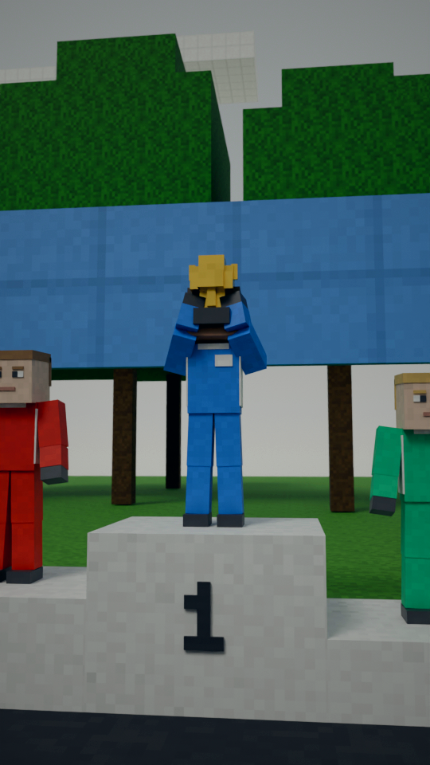
“and again, and”
'And again': he lifts a trophy on the top step.
collision check: clean
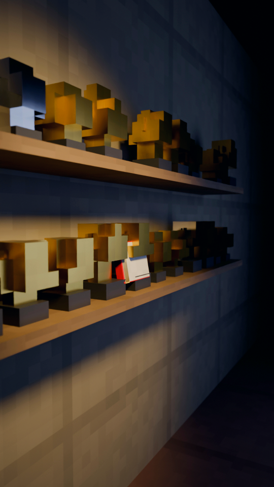
“again.”
'And again': a shelf crowded with trophies, the red book among them.
collision check: clean
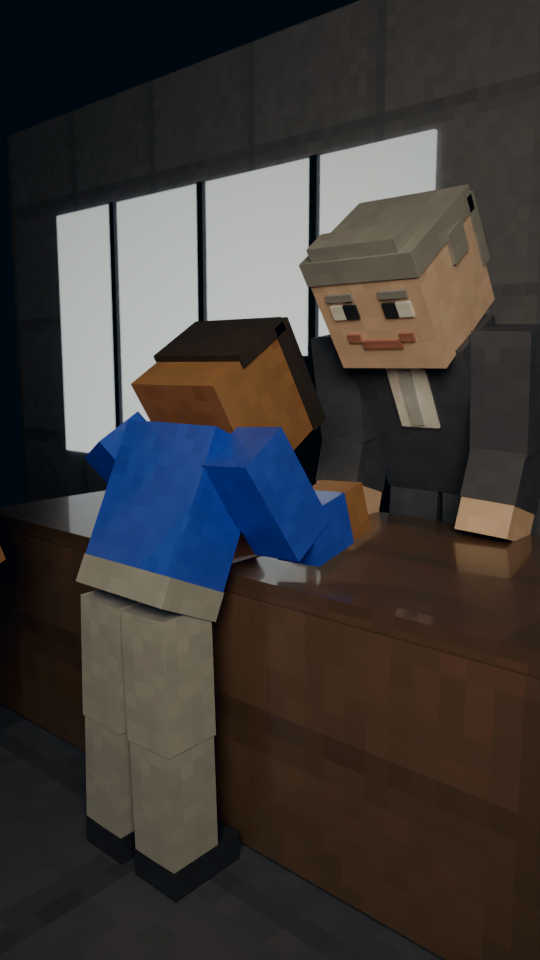
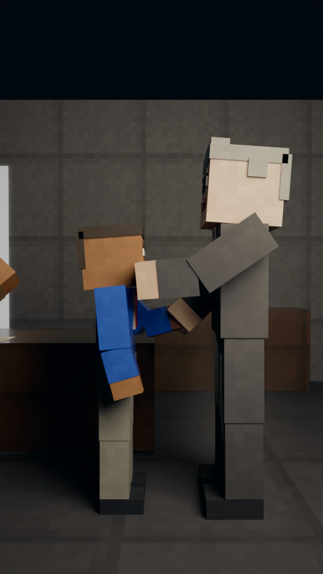
“Three years later, Dennis's team signed him. And”
AGE 13. In the boss's office he signs the contract, his dad behind him; then a handshake.
collision check: clean
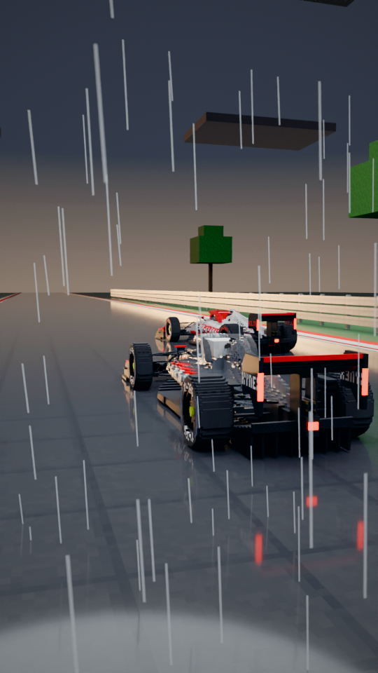
“at twenty-three, two corners from the end of the season,”
AGE 23. Brazil 2008, the last lap in the rain: his silver car behind a slower white car.
collision check: clean
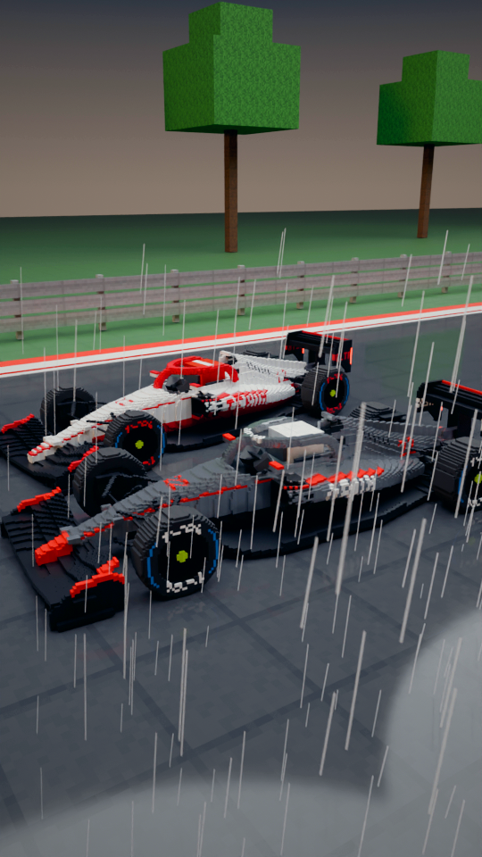
“he passed one last car. By”
Two corners from the end: up the inside, side by side, and through.
collision check: clean
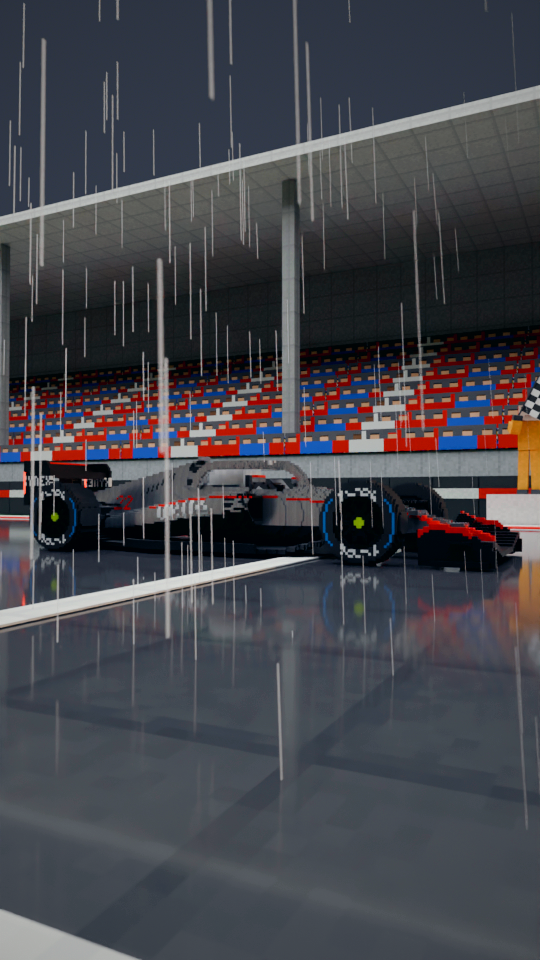
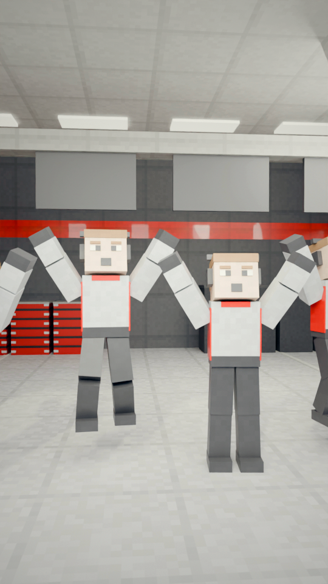
“a single point, he became world champion. Racing”
Across the line under the chequered flag; his crew in the garage erupt.
collision check: clean
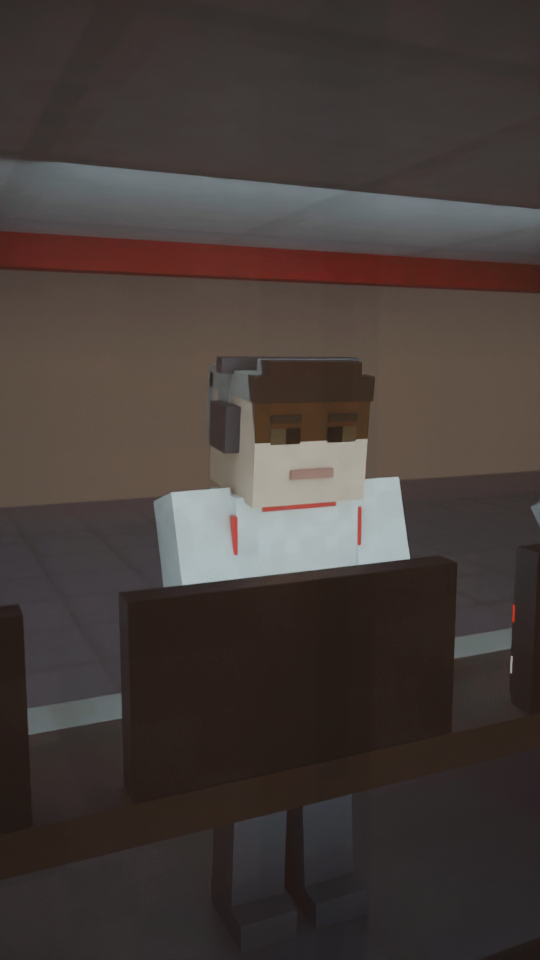
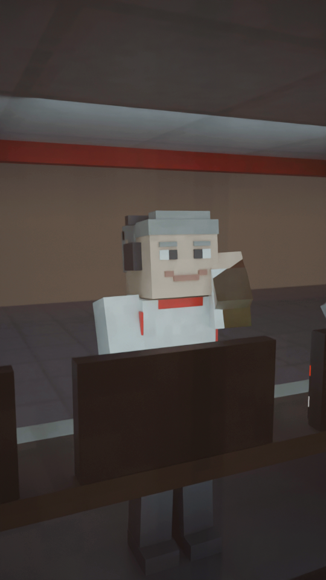
“for Ron Dennis. The”
Dennis on the pit wall: a slow breath, then a clenched fist.
collision check: clean
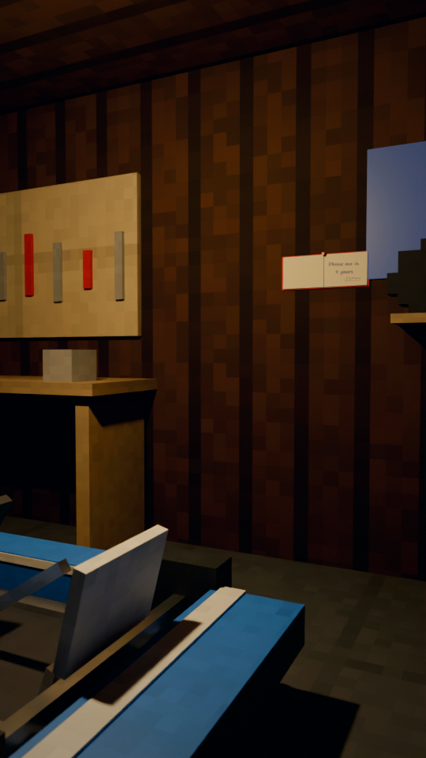
“boy with the fifth-hand”
Callback: the fixed-up kart under the bulb, the book on the wall.
collision check: clean
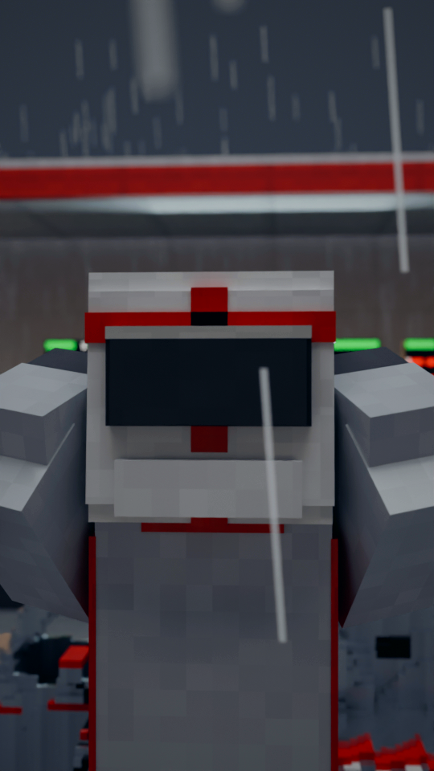
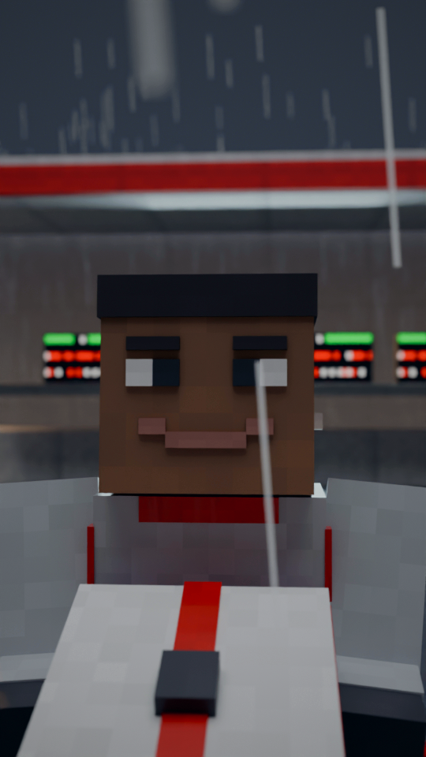
“go-kart was Lewis Hamilton.”
The grown driver lifts off his helmet on 'Lewis'. Hard cut.
collision check: clean